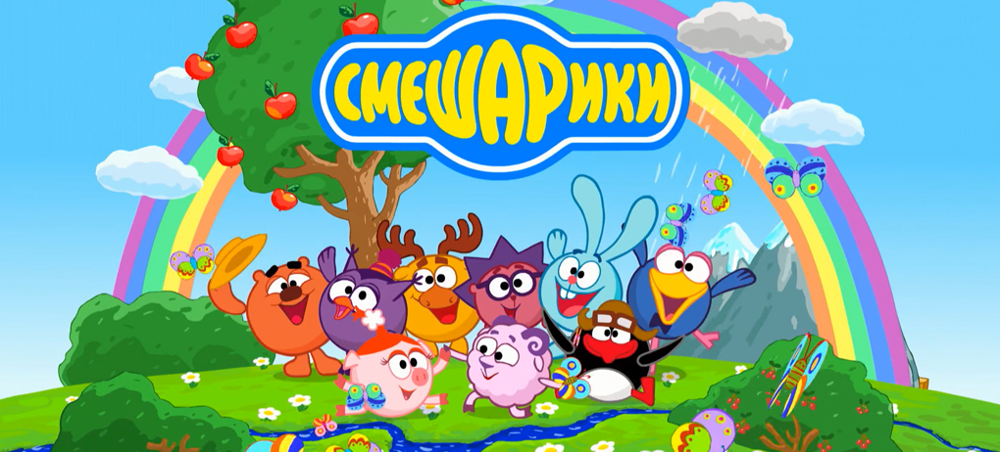
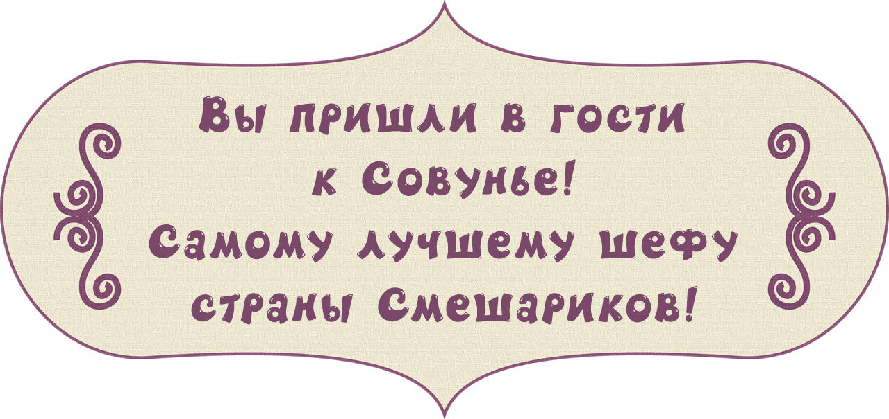
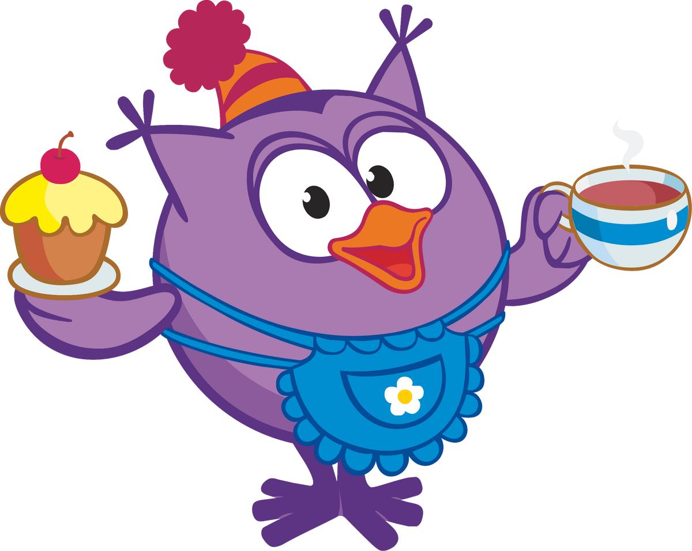
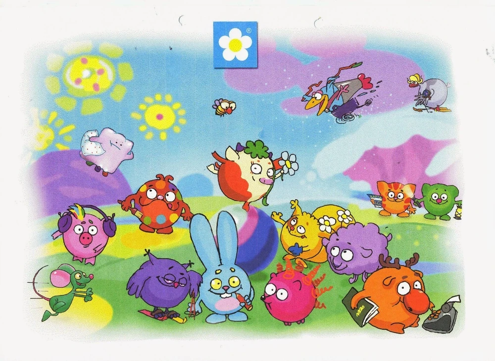

Да да... Вам не послышалось. "Сластены" это первоначальный вариант смешариков. Так они назывались с самого начала и выглядили совсем по другому.

Всего их было около двадцати, однако в окончательную версию мультсериала попали только шесть: Крош, Ёжик, Бараш, Лосяш, Кар-Карыч и Совунья. Ещё несколько персонажей, прошедших на поздние стадии производства (Гусений, Бурёнка, Диджей Робкий и Буль-до), впоследствии были заменены на Пина, Нюшу и Копатыча.Раз мы начали говорить о том, что было в начале, то давайте и послешаем о истории создания самой вселенной.
Автором идеи «Смешариков» стал Салават Шайхинуров — художник и дизайнер родом из Башкортостана, в начале 2000-х годов работавший в петербургской компании «Fun Game». В 2001 году он получил заказ, согласно которому должен был разработать дизайн круглых шоколадных конфет в виде животных. Однако Салават, нарисовавший несколько эскизов (первым из них был кролик, впоследствии превратившийся в Кроша), решил не отдавать их заказчику, а оставить у себя.
На протяжении 2002-2003 годов формировалась команда, которой в дальнейшем предстояло работать над мультсериалом. Так, его ведущим режиссёром стал Денис Чернов, ранее работавший на анимационной студии «Мельница», композиторами — Сергей Васильев и Марина Ланда. Самыми первыми тестированиями флэш-анимации, проводимыми на личном компьютере Салавата Шайхинурова, занимался Алексей Минченок. «Каждый раз, когда мы подставляли фон, компьютер зависал. Казалось, что мы не закончим анимационный тест никогда», — вспоминал потом художник.
На 5 картинке под номерами изображены первые создалети мультсериала: Алексей Лебедев (1), Денис Чернов (2), Алексей Минченок (3), Илья Максимов (4), Салават Шайхинуров (5), Илья Попов (6), Анатолий Прохоров (7).
«Смешарики» закрепились на телевидении лишь к лету 2004 года: 17 мая в программе «Спокойной ночи, малыши!» (телеканал «Россия») вышел сокращённый вариант серии «Скамейка», а 1 июня стартовала трансляция на «СТС» — сначала по будням, а впоследствии и по выходным.
Так называется место, где живут все главные герои мультсериала. В этой долине разворачиваются почти все мультяшные события, лишь изредка смешарики выходят за её границы (например, когда они путешествовали в Мегаполис или в космос).
Ниже вы можете посмотреть карту и нажать на любой домик, чтоб узнать кто в нем живет.
Большую часть карты занимает большой луг, где смешарики часто проводят время, гуляют, занимаются спортом. Внизу справа есть пляж и пирс с которого они часто ловят рыбу и уплывают в путешествия. Сверху слева карты расположилась пустыня, в которой Крош и Ежик заблужились, пока искали подарок для Нюши. А справа, около домика Совудьи находятся горы, куда смешарики ходят в походы.
Надеюсь ты посмотрел внимательно все серии "Смешариков". Также надеюсь, дорогой друг, ты прочитал всю информацию о каждом смешарике и все запомнил. Если это так, то давайте поскорее пройдем тест и узнаем насколько хорошо ты знаешь Вселенную Смешариков. Быстрее нажимай на НАЧАТЬ ТЕСТ!